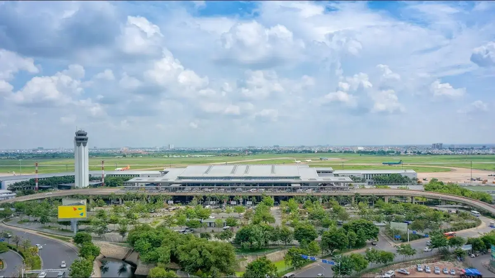
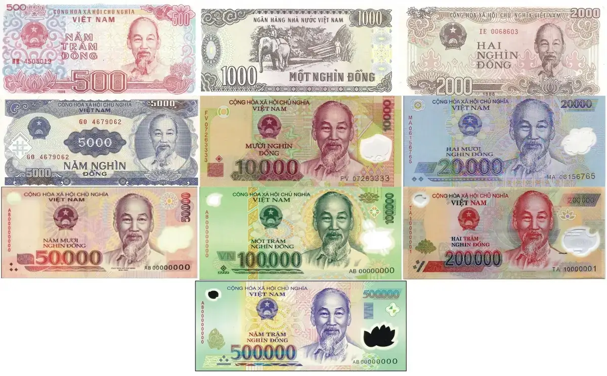
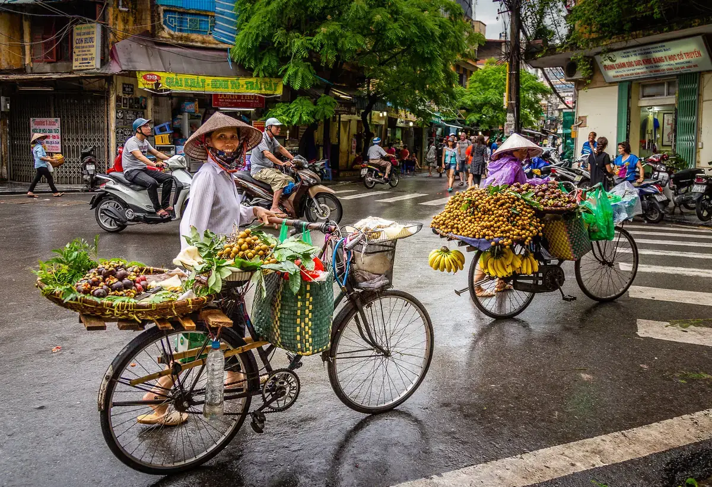
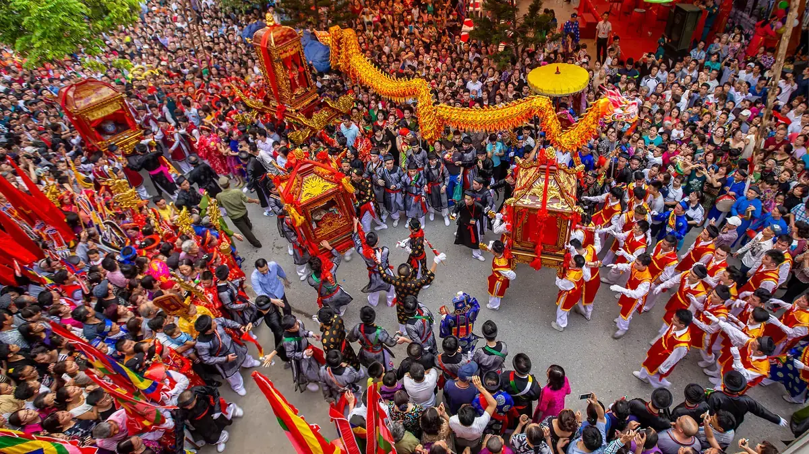
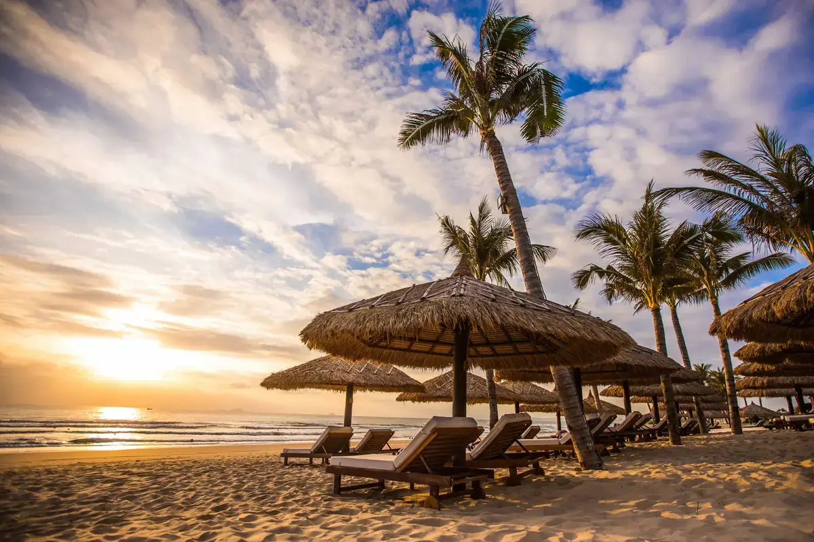
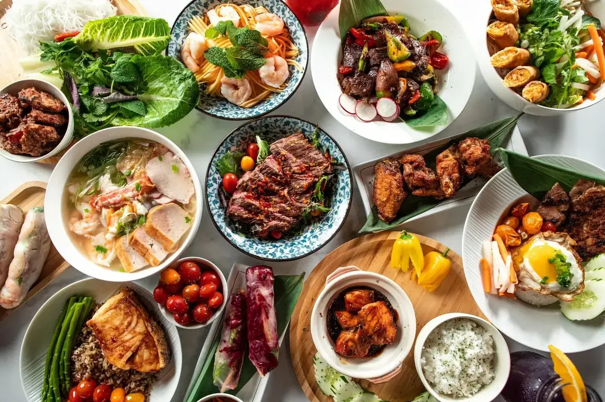
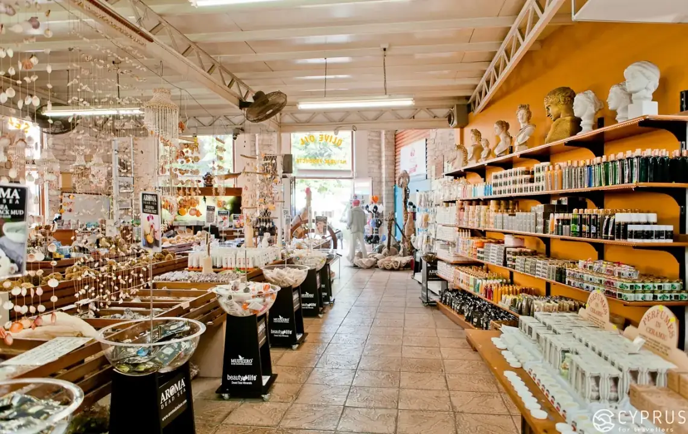
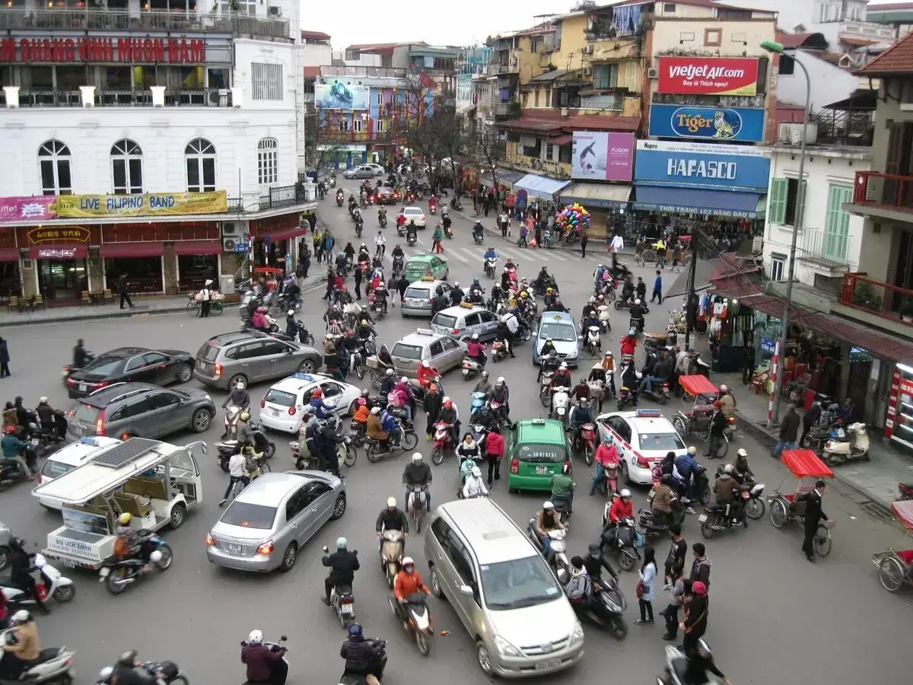

Перед отъездом
Проверьте наличие необходимых для поездки документов:

- заграничный паспорт (должен быть действителен в течение не менее 6-ти месяцев с даты въезда в страну и иметь чистую страницу для проставления визы);
- ксерокопия загранпаспорта (может пригодиться при утрате загранпаспорта и в случае непредвиденных обстоятельств);
- авиабилеты или маршрут/квитанции электронного билета;
- ваучер;
- страховой медицинский полис.
В случае путешествия с детьми
Несовершеннолетний гражданин РФ, следующий совместно хотя бы с одним из родителей, выезжает из РФ по своему загранпаспорту.
Несовершеннолетний российский гражданин, выезжающий из Российской Федерации без сопровождения родителей, должен иметь при себе кроме заграничного паспорта нотариально оформленное согласие родителей на его выезд за границу с указанием срока выезда и государство, которое он намерен посетить.
Без необходимости оформления для ребенка отдельного заграничного паспорта несовершеннолетний гражданин РФ до 14 лет может выехать совместно хотя бы с одним из родителей, если он вписан в заграничный паспорт родителя, оформленный по старому образцу (к паспорту старого образца относится паспорт не биометрический, оформленный в соответствии с постановлением Правительства Российской Федерации от 14 марта 1997 г. № 298). В паспорт родителя в этом случае обязательно должна быть вклеена фотография ребенка, независимо от его возраста, на которой должна стоять печать паспортно-визовой службы. Отсутствие фотографии или печати является основанием для отказа ребенку в пересечении границы. Выезд из РФ несовершеннолетних детей, сведения о которых внесены в паспорта сопровождающих их родителей, оформленные по старому образцу, осуществляется по срокам действия паспортов.
На заграничные паспорта, оформленные по новому образцу (биометрический), распространяются нормы Постановления Правительства РФ №13 от 19 января 2010 года о том, что внесение сведений о детях в паспорт, удостоверяющий личность родителя, не дает права ребенку на выезд за пределы территории РФ без документа, удостоверяющего личность гражданина РФ за пределами территории РФ.
При следовании несовершеннолетнего российского гражданина через государственную границу РФ совместно с одним из родителей предъявлять письменное согласие второго родителя не нужно, если только от него ранее в пограничные органы не поступало заявление о несогласии на выезд из РФ своих детей.
Если у несовершеннолетнего ребенка и выезжающего с ним родителя разные фамилии, то рекомендуем взять с собой нотариально заверенную копию свидетельства о рождении для подтверждения родства. На практике отсутствие такого подтверждения служило основанием для отказа ребенку в пересечении границы.
Беременным женщинам
Перед полетом мы рекомендуем ознакомиться с правилами авиакомпании на необходимость предоставления письменного согласия врача на полет, а также иных документов для осуществления авиаперелета. Сотрудники авиакомпании имеют полное право отказать в авиаперевозке или потребовать медицинское освидетельствование в аэропорту вылета в случае нарушения правил.
Собирая багаж

Рекомендуем все ценные вещи, документы и деньги положить в ручную кладь и взять с собой в самолет.
В багаж следует упаковать все металлические острые и режущие предметы (маникюрные ножницы, пилочки для ногтей, перочинный ножик и т. п.), а также любые жидкости, гели и аэрозоли (за исключением детского питания и лекарств, если в них есть необходимость) — проносить подобные предметы в ручной клади запрещено .
Не забывайте собрать и взять с собой аптечку первой помощи , которая поможет при легких недомоганиях, сэкономит время на поиски лекарственных средств и избавит от нежелательного общения на иностранном языке.
В российском аэропорту вылета/прилета
Перед выездом в аэропорт получите дополнительную информацию о возможно произошедших изменениях в условиях вылета, используя сайт авиакомпании, выполняющей рейс, или по телефону ее справочной службы.
Рекомендуем заранее, не позднее чем за три часа до вылета, прибыть к месту регистрации пассажиров для прохождения установленных процедур регистрации, оформления багажа, и выполнения требований, связанных с пограничным, таможенным, санитарно-карантинным, ветеринарным и другими видами контроля, установленными законодательством РФ.
Таможенный контроль до начала путешествия

Перед полетом рекомендуем проверять действующие правила вывоза физическими лицами наличной иностранной валюты из РФ, товаров и иных предметов на сайте Федеральной Таможенной Службы customs.gov.ru. Обращаем внимание на то, что в настоящее время действуют ограничения.
С 1.01.2025 во Вьетнаме запрещено любое использование электронных сигарет (все виды электронных сигарет и курительных смесей, в том числе Iqos) — ввоз во Вьетнам, курение на всей территории страны, продажа. Также запрещен ввоз кальянов, угля, табака и их использование на территории Вьетнама.
Внимание! Запрещено перемещение на выезде и въезде:
- культурных ценностей,
- объектов фауны и флоры, находящихся под угрозой исчезновения,
- оружия и боеприпасов к нему без разрешения уполномоченных органов.
Незаконное перемещение товаров или валюты через таможенную границу РФ или их недекларирование, либо недостоверное декларирование влечет за собой административную или уголовную ответственность.
Внимание! Запрещено на выезде и въезде:
- принимать от посторонних лиц чемоданы, посылки и другие предметы для перевозки на борту воздушного судна.
Таможенный контроль по окончании путешествия
Если вы не перемещаете через границу валюту и предметы, которые необходимо декларировать, то вам следует проходить зону таможенного контроля по «Зеленому коридору».
Актуальную информацию о ввозе валюты, товаров и иных предметов для личного пользования, вы найдете на сайте Федеральной Таможенной Службы customs.gov.ru.
Внимание! Недекларирование товаров в случае превышения стоимостных или весовых норм, а также наличных денежных средств и (или) денежных инструментов влечет за собой административную или уголовную ответственность.
Таможенный контроль в аэропорту Вьетнама
.jpeg)
Ввоз иностранной валюты не ограничен, но необходимо декларировать сумму свыше 5 000 долларов США, вывоз валюты разрешается только в пределах декларации.
Разрешен беспошлинный ввоз:
- 400 сигарет или 0,5 кг табака, или 100 сигар,
- 2 л алкогольных напитков крепостью до 22 градусов или 1,5 л крепких алкогольных напитков (общий объем ввозимого алкоголя не должен превышать 3 л),
- до 5 кг чая,
- до 3 кг кофе,
- косметики, парфюмерии,
- продуктов питания в пределах личной потребности и общей стоимостью не более 5 млн донг.
- аудио-, видео-, теле- и фотоаппаратуру необходимо указывать в декларации.
Запрещен ввоз:
- наркотиков,
- лекарств, содержащих большую дозу наркотических веществ,
- оружия.
Из Вьетнама можно вывозить иностранную валюту в эквиваленте до 5 000 долларов США без декларирования. Если сумма превышает 5 000 долларов США, необходимо задекларировать её при въезде и предоставить документы, подтверждающие законное происхождение средств при вывозе.
Запрещен вывоз:
- предметов искусства и антиквариата,
- ювелирных украшений и предметов народного промысла без соответствующего документального оформления,
- национальной валюты.
Внимание! С 21 августа 2019 года Управление гражданской авиации СРВ приняло решение о запрете на перевозку на борту самолетов (как в ручной клади, так и в багаже) 15-дюймовых моделей MacBook Pro, выпущенных с сентября 2015 года по февраль 2017 года из-за риска возгорания их аккумуляторных батарей.
Вьетнамские власти ужесточили соответствующий контроль за портативной компьютерной техникой при прохождении досмотра во всех аэропортах страны. Данный запрет касается всех международных авиарейсов, вылетающих из Вьетнама, а также внутренних рейсов, осуществляемых вьетнамскими и зарубежными авиакомпаниями по территории СРВ.
За нарушение этого запрета пассажир может быть не допущен на рейс, а также оштрафован.
Проверить модель MacBook Pro можно на официальном сайте компании Apple по адресу: https://support.apple.com/15-inch-macbook-pro-battery-recall .
Регистрация на рейс и оформление багажа
До начала поездки настоятельно рекомендуем уточнить время начала и окончания регистрации на рейс, а также время посадки на борт. Указанную информацию вы можете посмотреть на официальном сайте авиакомпании. Помните, что у разных авиакомпаний могут быть свои правила.
Регистрация пассажиров и оформление багажа производятся на основании именного авиабилета или распечатанных на бумажном носителе маршрута и/или квитанции электронного билета, а также заграничного паспорта пассажира.
При регистрации пассажиру выдается посадочный талон, который необходимо сохранять до момента возможного предъявления авиакомпании претензий по качеству предоставленных услуг авиаперевозки.
Перед посадкой на рейс рекомендуем проверить номер выхода и время начала посадки на рейс на информационном табло в аэропорту.
Пассажиру, опоздавшему ко времени окончания регистрации пассажиров и оформления багажа или посадки в воздушное судно, может быть отказано в перевозке.
Каждый авиаперевозчик устанавливает свои нормы провоза багажа, а также габариты и вес ручной клади, провозимой в салоне самолета. Уточняйте данную информацию перед вылетом.
За провоз багажа сверх установленной нормы бесплатного провоза багажа взимается дополнительная плата по тарифу, установленному перевозчиком.
Перевозчик имеет право отказать туристу в перевозе багажа, вес или объем которого не соответствуют установленным нормам.
Паспортный контроль
Для прохождения пограничного контроля необходимо предъявить заграничный/внутренний российский паспорт. Пограничные органы ФСБ РФ при осуществлении пограничного контроля имеют право запрашивать у туристов дополнительные документы (авиабилет, посадочный талон, ваучер и т. п.), а также проводить опрос лиц, следующих через границу.
Санитарный контроль
При совершении путешествия по Вьетнаму риска заражения особо опасными инфекционными заболеваниями нет, делать прививки официально не требуются. Можно рекомендовать в профилактических целях сделать противостолбнячные инъекции и прививку против гепатита А и В.
Ветеринарный контроль
Если вы вывозите животных во Вьетнам, то необходимо иметь комплект документов, подтверждающих, что они здоровы. Как правило, следует иметь:
- ветеринарный паспорт ,
- справку о состоянии здоровья (выдается любой государственной ветеринарной клиникой),
- справку из клуба СКОР или РКФ (в справке указывается, что животное не представляет племенной ценности, справки из других клубов вызывают вопросы на таможне),
- сертификат ветеринарной службы с отметкой о всех прививках, включая прививку против бешенства.
Внимание ! Отели Вьетнама размещения с домашними животными, как правило, не предоставляют .
При ввозе в РФ животных и птиц необходимо иметь сопровождающее ветеринарное свидетельство, полученное в Государственной ветеринарной службе страны, где приобретено животное.
Запрещен ввоз на территорию РФ любых грузов животного происхождения, в том числе в ручной клади и багаже, при отсутствии письменного разрешения Главного государственного ветеринарного инспектора РФ.
Без разрешения уполномоченных органов РФ запрещено ввозить и вывозить объекты дикой фауны и флоры, находящиеся под угрозой исчезновения.
В аэропорту прилёта/вылета Вьетнама

По прибытии в аэропорт Вьетнама нужно последовательно:
- пройти паспортный контроль,
- получить свой багаж,
- пройти таможенный контроль,
- выйти из здания аэропорта,
- найти встречающего гида с табличкой «туроператора»,
- предъявить гиду туристский ваучер.
Паспортный контроль. Виза
Правила въезда во Вьетнам для граждан России, Беларуси и Киргизии:
- При въезде во Вьетнам разрешен безвизовый въезд на срок до 45 дней пребывания, включая день въезда и день выезда. Для граждан Киргизии разрешен безвизовый въезд на срок до 30 дней пребывания.
Условия для безвизового посещения Вьетнама:
- Турист не находится в списке лиц, запрещённых к въезду во Вьетнам.
- Турист должен иметь загранпаспорт, срок действия которого не менее 6-ти месяцев со дня окончания поездки.
- Турист должен иметь обратный билет.
Если планируется пребывание во Вьетнаме более 45 дней, необходимо предварительное оформление визового приглашения.
За превышение срока пребывания 45 дней без визы или срока действия визы вьетнамскими законами предусмотрен штраф.
Правила въезда во Вьетнам для иностранных граждан:
- Для иностранных граждан необходимо оформление визы в аэропорту прилета, на основании заранее оформленной визовой поддержки.
Правила оформления визовой поддержки можно найти в разделе «Оформление визового приглашения через туроператора».
Правила въезда во Вьетнам с несовершеннолетними:
- Для несовершеннолетних выезжающих в сопровождении третьих лиц, на границе необходимо предоставить согласие на выезд от одного из родителей, с нотариально заверенным переводом на английский язык + обычную копию свидетельства о рождении.
- Для несовершеннолетних выезжающих в сопровождении одного из родителей, на границе необходимо предоставить обычную копию свидетельства о рождении.
Правила провоза и использования дронов во Вьетнаме
Согласно CAAV, беспилотные летательные аппараты разрешены во Вьетнаме в соответствии с правилами CAAV. Туристы могут привезти свой беспилотник во Вьетнам, но для этого им потребуется разрешение Министерства обороны.
Для использования беспилотных летательных аппаратов в туристических целях во Вьетнаме требуется разрешение. Туристам необходимо отправить запрос в соответствующий отдел компании для дальнейшего получения разрешения Вьетнамской стороны (Вьетнамская сторона будет заниматься получением разрешения). Перед отправкой запроса на получение разрешения в компанию туристу необходимо подготовить следующие документы:
- Заявление на получение лётной лицензии. Подготовьте заявление по форме, указанной в Указе 79/2011/ND-CP (APPLICATION FORM FOR REQUEST OF FLIGHT AUTHORIZATION). Место подачи заявления — оперативный департамент Генерального штаба — дом № 1 Нгуен Три Фуонг, район Ба Динь, город Ханой (Department of Operations - General Staff - No. 1 Nguyen Tri Phuong, Ba Dinh District, Hanoi City);
- Удостоверение личности/карта, удостоверяющая личность гражданина/паспорт представителя или заявителя (требуется нотариально заверенная ксерокопия). Если вы являетесь компанией, подающей заявку на получение лицензии, вам потребуется свидетельство о регистрации бизнеса (требуется нотариально заверенная ксерокопия);
- Фотография беспилотника. Требуется цветная печать (фото-скан для отправки), минимальный размер 18 х 24 см;
- Фотография района, в котором выдаётся разрешение на полёты. Требуется цветная фотография Google Maps;
- Техническая документация на ваш беспилотник включает фотографии данного типа и письменное описание его технических характеристик;
- Лицензия или другой юридический документ, разрешающий вашему беспилотнику взлетать с аэродрома, поверхности суши или воды или садиться на них;
- Все остальные имеющиеся документы на беспилотник.
Подайте заявку как минимум за 14 дней до запланированного рейса (никаких изменений не вносите менее, чем за десять дней).
Стоимость разрешения варьируется 350-700 долларов за 1 локацию полёта дрона / за день / за одноразовое использование дрона. Конечная стоимость будет озвучена Вьетнамской стороной после получения заявления на использование дрона, так как цена зависит от района использования и количества вылетов.
Если для использования дрона запрашиваются разные локации или разные дни использования, турист будет использовать дрон несколько раз в день — цена будет рассчитываться за каждую фактическую указанную в заявлении локацию (район использования, за один взлёт дрона).
Если вы хотите использовать беспилотник во Вьетнаме, не проходя сложный процесс подачи заявки на получение лицензии, можно арендовать беспилотник во Вьетнаме. Процесс будет менее сложным.
Документы для подачи заявления на получение лицензии на полеты беспилотных летательных аппаратов:
- Заявление на получение лицензии на полеты. Подготовьте заявление по форме, указанной в Постановлении 79/2011/ND-CP ( APPLICATION FORM FOR REQUEST OF FLIGHT AUTHORIZATION). В данном случае заполнять информацию про дрон в анкете не нужно;
- Паспорт представителя или заявителя (требуется нотариально заверенная ксерокопия);
- Фотография района, в котором применяется лицензия на полеты. Требуется цветная фотография Google Maps.
Стоимость: 200 долларов США за каждый район полета/ за раз.
Все документы и запрос отправлять в соответствующий отдел компании (обратите внимание: отправлять документы и запрос необходимо минимум за 3 недели до рейса, для подготовки).
Самые важные правила, которые необходимо знать при управлении беспилотником во Вьетнаме:
- Для каждого полета беспилотника, проводимого во Вьетнаме, требуется специальная летная лицензия. Заявки должны подаваться в Оперативное бюро Главного командного пункта Министерства обороны не позднее, чем за 14 дней до запланированной даты полета;
- Беспилотным летательным аппаратам запрещено перевозить радиоактивные, легковоспламеняющиеся или взрывоопасные материалы;
- Беспилотные летательные аппараты не могут использоваться для запуска, отстрела или сброса за борт потенциально опасных объектов или веществ;
- Беспилотные летательные аппараты могут летать на максимальной высоте 492 фута;
- Дроны должны весить менее 26 фунтов;
- Полеты беспилотных летательных аппаратов над военными базами или правительственными зданиями запрещены;
- Полеты беспилотных летательных аппаратов разрешены только в светлое время суток;
- Без лицензии, выданной для этой цели, беспилотные летательные аппараты не могут устанавливаться на воздушное оборудование или использоваться для аэрофотосъемки или фотосъемки с воздуха;
- Беспилотным летательным аппаратам не разрешается поднимать флаги или транспаранты, распространять листовки или участвовать в какой-либо другой форме пропаганды.
Туристу необходимо заполнить форму и ответить на подробные вопросы о его пребывании и категории беспилотного летательного аппарата, включая зону, в которой разрешены полеты, направление и маршрут полета, время и продолжительность полета, правила, касающиеся уведомления о координации полета и контроля за полетом. На утверждение данной формы может уйти до 3 недель.
Запрещенные и ограниченные зоны полетов беспилотных летательных аппаратов во Вьетнаме:
Зоны, ограниченные для полетов:
- Воздушное пространство на высоте более 120 м над уровнем местности (за исключением зон, запрещенных для полетов);
- Густонаселенный район с большим скоплением людей;
- Пограничная зона с Китаем находится на расстоянии 25 000 м от границы на всех высотах. Пограничная зона с Лаосом и Камбоджей находится на расстоянии 10 000 м от границы на всех высотах;
- Зоны, прилегающие к запрещенным зонам в аэропортах и на аэродромах, где летают самолеты гражданской авиации и военные самолеты (шириной 3000 м, длиной 5000 м) от границы запрещенной зоны полетов в аэропортах и на аэродромах на высоте менее 120 м над уровнем местности.
В некоторых случаях беспилотным летательным аппаратам может быть разрешено летать в зонах ограниченного доступа, если они соответствуют требованиям организации, выдающей лицензии на полеты.
Зоны, запрещенные для полетов:
- В зону входят оборонительные сооружения или специальные военные зоны, находящиеся под непосредственным руководством, управлением и защитой Министерства национальной обороны (беспилотникам разрешается летать на расстоянии не менее 500 м по горизонтали от границы этой запрещенной зоны на всех высотах);
- Район, где находятся рабочие штаб-квартиры министерств, агентств, департаментов и отделений партии, государства, правительства, центрального аппарата на уровне провинций и городов, дипломатических представительств и консульств, представительств международных организаций, базирующихся во Вьетнаме (беспилотнику разрешается летать на расстоянии не менее 200 м по горизонтали от границы этой запрещенной зоны на всех высотах);
- Зоны обороны и безопасности (беспилотнику разрешается летать на расстоянии не менее 500 м по горизонтали от границы этой запрещенной зоны на всех высотах);
- Аэропортовые зоны и аэропорты, в которых эксплуатируются гражданские и военные воздушные суда (подробности приведены в решении 18/2020/QD-TTg);
- Зоны, находящиеся в пределах действия воздушных линий, маршруты полетов, полетные коридоры, которые были лицензированы в воздушном пространстве Вьетнама, и ограниченный диапазон воздушных линий, которые были перечислены авиационным управлением Вьетнама в разделе новостей авиации Вьетнама «AIP Vietnam».
Вьетнам
Вьетнам расположен на полуострове Индокитай. Общая площадь территории составляет 331 км². На севере страна граничит с Китаем, на западе – с Лаосом и Камбоджой, на востоке омывается Южно-Китайским морем и заливом Бакбо, на юго-западе — Сиамским заливом. Вьетнам является Социалистической Республикой и делится на 58 провинций и 5 городов центрального подчинения: Ханой, Хошимин (бывший Сайгон), Хайфон, Дананг и Кантхо.
Леса занимают около 20 % территории страны, многие регионы объявлены заповедными. В них обитают олени, обезьяны, тапиры и дикие свиньи. Морские и речные воды страны богаты многообразием видов рыб, мидий и креветок.
Белоснежные и золотистые песчаные пляжи, лазурные воды Южно-Китайского моря и возможность круглогодичного отдыха делают Вьетнам необыкновенно привлекательным для туристов. Здесь можно заняться дайвингом, серфингом, яхтингом, отправиться исследовать дюны, посетить близлежащие острова или углубиться в джунгли, чтобы увидеть величественные водопады.
Время
Разница во времени Вьетнама с Москвой — минус 4 часа.
Климат
Климат большей части Вьетнама — тропический муссонный, средняя температура практически не меняется в течение года и колеблется в пределах +26 … +29 °С.
Валюта

Имейте в виду, что обменивать купюры в 50 и 100 долларов США выгоднее, чем более мелкие купюры.
Кредитные карточки распространяются все больше, особенно это касается крупных городов, отелей и ресторанов, где бывают иностранцы. А вот в магазинах расплачиваться карточкой, как правило, невозможно.
Язык
Вьетнамский, представлен тремя диалектами: северным, центральным и южным. Универсальным языком общения является английский.
Население
Примерная численность населения — 94,6 млн человек. Титульная нация — вьеты. Национальные меньшинства представлены кхмерами, таями, мео, манн, чамами и китайцами.
Религия
Когда вьетнамцев спрашивают об их вероисповедании, они затруднятся с ответом. Местные жители верят в духов, к которым обращаются в различных жизненных ситуациях. Общины сами принимают решение о том, какие духи им будут покровительствовать. Существует культ предков.
Обычаи

У вьетнамцев не принято в знак приветствия пожимать друг другу руки. Во Вьетнаме также не принято громко говорить, активно жестикулировать и шумно себя вести. Махать рукой официанту в ресторане с целью подозвать его к столику тоже считается плохим тоном. Во время еды не стоит оставлять свои палочки в еде или прикасаться ими к палочкам сотрапезников. Передавать или принимать что-то нужно обеими руками, либо подавать правой, но придерживать правую руку левой в области запястья. В ресторане не принято делить счет пополам, его оплачивает тот, кто занимает более высокий социальный статус.
У вьетнамцев не принято прикасаться друг к другу во время разговора: похлопывать по плечу или колену, прикасаться к голове другого человека, поскольку это может быть воспринято как скрытая угроза или оскорбление. При этом сами они любят дотрагиваться до иностранцев, поскольку считается, что это приносит удачу. Кроме того, будьте готовы, что при разговоре вьетнамцы не смотрят собеседнику в глаза — это проявление уважения.
При входе в буддистский храм нужно снимать обувь. Обходят храм только по часовой стрелке. Ваше небольшое пожертвование в пользу храма будет воспринято как знак уважения. В некоторые пагоды разрешен вход только в одежде с закрытыми плечами и в брюках, для женщин — юбки и платья не выше колен.
Праздники и нерабочие дни

Банки и учреждения закрыты по всей стране в указанные дни, но большинство магазинов работают. Исключением является праздник Tet, когда закрываются даже частные рестораны.
1 января — Новый год;
3 февраля — День создания Коммунистической партии, 1930;
Tet — вьетнамский Новый год по лунному календарю, отмечается в течение 4-х дней между серединой января и серединой февраля, точных дат нет, так как каждый год даты сдвигаются;
30 апреля — День освобождения Сайгона;
1 мая — День международной солидарности трудящихся;
19 мая — День рождения Хо Ши Мина, 1890;
2 сентября — День независимости, 1945;
3 сентября — День смерти Хо Ши Мина.
В отеле

В день приезда расселение осуществляется в соответствии с правилами, принятыми в отеле. Обычно начиная с 14:00 по местному времени. Просим ознакомиться на месте с условиями предоставления услуг в отеле и придерживаться установленных отелем правил.
В день выезда до наступления расчетного часа (как правило, 12:00) необходимо освободить свой номер и оплатить дополнительные услуги: телефонные переговоры, мини-бар, заказ питания и напитков в номер, массаж и др. Свой
багаж можно оставить в камере хранения отеля и оставаться на территории отеля до прибытия трансфера. Если вы не сдали номер до 12:00, стоимость комнаты оплачивается полностью за следующие сутки.
Правила бронирования доп. кроватей во Вьетнаме:
- При бронировании типа размещения 2 + 1 — дополнительная кровать не предоставляется.
- При бронировании типа размещения 2 + 1 (ex.bed) — предоставляется 1 дополнительное место (кровать или раскладушка, в зависимости от отеля).
- При бронировании типа размещения 2 + 1 (ex.bed) + 1 (no ex.bed) — предоставляется 1 дополнительное место (кровать или раскладушка, в зависимости от отеля). Второй ребенок спит с родителями.
- При бронировании типа размещения TRPL — предоставляется 1 дополнительное место (кровать или раскладушка, в зависимости от отеля).
- При бронировании 3+1 – предоставляется только одна доп. кровать, ребенок спит с родителями.
При бронировании размещения с припиской WITHOUT EX BED постельные и банные принадлежности не предоставляются.
Вторая доп. кровать не предоставляется ни в каком варианте размещения.
Правила предоставления лежаков в отелях Вьетнама
Обращаем внимание, что количество лежаков в городских отелях не соответствует номерному фонду, а регламентируется муниципалитетом. Количество лежаков может варьироваться от 4 до 18. В связи с этим, некоторые отели могут вводить временные ограничения для бесплатного пользования лежаками (3-4 часа в день), чтобы все гости отеля имели возможность воспользоваться услугой.
Напряжение электросети
Напряжение в сети: 220 В, но в некоторых регионах — 110 В. Имеет смысл взять с собой универсальный адаптер, потому что розетки бывают разной формы.
Экскурсии
Гид компании, принимающий вас во Вьетнаме, во время встречи в отеле сообщит перечень предлагаемых экскурсий, их содержание, график проведения и стоимость. Не рекомендуем приобретать экскурсии или прочие услуги в неизвестных вам туристских и экскурсионных агентствах. Вам может быть дана заведомо ложная информация о самой экскурсии, а также о качестве транспорта для ее организации. Вам может быть предоставлено для использования несертифицированное, неисправное или не соответствующее санитарно-гигиеническим нормам оборудование.
Кухня

Вьетнамцы обычно начинают день с супа из лапши. Лапша бывает двух видов: белая рисовая или желтая из пшеничной муки. Ее кладут в пиалу, посыпают зеленью, добавляют овощи, куриное мясо или говядину, заливают мясным бульоном. Даже с утра блюдо обильно посыпают перцем и мелко нарезанным чили. На обед или ужин обычно готовят рис, к нему — мясо, рыбу, овощи. Почти всегда в конце трапезы подают суп.
На вьетнамском столе непременно стоит тарелочка со смесью соли и перца, рыбный соус, миска с листьями салата (без заправки) и свежей зеленью — лимонной мелиссой, мятой, кинзой. На десерт принято подавать фрукты: ананасы, дыни, личи, манго, папайю, грейпфруты. Экзотические блюда — мясо питона, удава и крокодила, блюда
из насекомых. Здесь также готовят мясо полевых крыс и собак. Если вы увидите в меню название «маленький тигр», то это мясо домашней кошки.
Национальным напитком во Вьетнаме считается зеленый чай, его пьют из маленьких 50-граммовых чашечек. А вот черный чай вьетнамцы почти не пьют. Страна славится прекрасным и ароматным кофе.
Магазины

Во Вьетнаме низкие цены на многие товары. Магазины Вьетнама самые разные: современные торговые центры, бутики, супермаркеты, шумные открытые рынки, целые торговые деревни, лавки, ларьки, галереи. В торговых центрах цены в магазинах одежды приблизительно такие же, как в европейских странах. Самые лучшие покупки во Вьетнаме для туристов — это одежда из шелка, жемчуг, ювелирные украшения и ремесленные поделки.
Не забывайте торговаться! На вьетнамском языке покупка будет «муа», а скидка «зам за». Если цена на товар произносится устно, это означает, что обязательно нужно торговаться. Как правильно, цену можно скинуть на 30-50 %, а в некоторых туристических местах, например, возле известных достопримечательностей, цену могут снизить в 5 раз и более.
Транспорт

Существует ежедневное железнодорожное сообщение между Ханоем и Хошимином. Трижды в день поезд-экспресс отправляется с севера на юг и обратно. Иностранцы оплачивают билеты в долларах США и платят больше, чем местные жители. Имеются поезда повышенной комфортности.
Многие отели и фирмы на местах предлагают поездки на микроавтобусах по фиксированным ценам. Этот способ передвижения дешевле и быстрее, чем поезд. Существует два типа междугородних автобусов: с кондиционером и указанным в билете местом и мини-бас (без кондиционера и без места).
В больших городах активно используется такси со счетчиком. Такси, как правило, стоят у международных отелей, но можно и просто остановить машину на улице, махнув рукой.
Важно ! Такси — самый проблемный вид транспорта во Вьетнаме. Водители постоянно завышают цены. Типичные для Вьетнама велорикши теперь встречаются реже, зато появились такси-мопеды. Никакой лицензии у них нет и о цене нужно договариваться.
Аренда автомобиля
Машину напрокат можно взять только с шофером (иногда еще и с переводчиком). Самостоятельно управлять автомобилем туристам запрещено, так как вьетнамская дорожная служба не признает международные водительские права.
Почти во всех городах, где бывают туристы, можно взять велосипед напрокат в отеле или велосипедном магазине.
Телефон
Телефонные карточки для автоматов продаются не только на почте, но и в большинстве магазинов, ларьков.
Звонок из Вьетнама в Россию: (007) + код города + телефонный номер.
Звонок из России во Вьетнам: 8 910 (84) + код города + телефонный номер.
Код Ханоя: 4.
Код Хошимина: 8.
Код Нячанга: 58.
Код Фантхиета: 62.
Код Фукуока: 92.
Звонить по международной связи можно практически из любого крупного города или поселка, но только через переговорный пункт.
Экстренные телефоны
- полиция: 113,
- скорая помощь: 115,
- пожарная служба: 114.
Чаевые
Официально давать чаевые во Вьетнаме не принято, но во многих ресторанах это уже стало обычной практикой.
Правила личной гигиены и безопасности
Перед путешествием мы советуем ознакомиться с «Полезными советами российским гражданам, выезжающим за рубеж», размещенными на сайте МИД РФ: https://www.kdmid.ru/info-for-traveling-abroad/useful-tips-for-russian-citizens-traveling-abroad/, а также с памяткой МИД РФ «Каждому, кто направляется за границу», и памяткой Роспотребнадзора выезжающим за рубеж.
Не нарушайте правила безопасности, установленные авиакомпаниями, транспортными организациями, гостиницами, местными органами власти.
Категорически не рекомендуем приобретать экскурсии и дополнительные туристские услуги в неизвестных туристских и экскурсионных агентствах. Вам может быть дана заведомо ложная информация о самой экскурсии, вам не будет гарантирована безопасность предоставленных услуг и исправность используемого оборудования, тем самым можно подвергнуть себя серьезной опасности.
Перед поездкой рекомендуется взять с собой ксерокопии основных страниц (с фотографией, личными данными, отметкой о регистрации) заграничного и внутреннего паспортов РФ. Паспорт (или ксерокопию паспорта), визитную карточку отеля носите с собой.
При возникновении транспортных аварий, конфликтов с полицией, другими органами местной власти необходимо поставить в известность представителя принимающей стороны или сотрудников посольства/консульства РФ.
В период путешествия турист не имеет права на коммерческую деятельность или иную оплачиваемую работу.
Вы обязаны покинуть Вьетнам до истечения срока безвизового пребывания, в противном случае вы можете быть подвергнуты штрафу, аресту и высланы из страны в принудительном порядке.
Не оставляйте детей одних без присмотра на пляже, у бассейна, на водных горках и аттракционах.
Мойте руки перед едой. Не пейте сырую воду, особенно из открытых водоемов. Для питья рекомендуется использовать минеральную воду, которую можно приобрести в магазинах и барах отеля.
Возьмите в путешествие индивидуальную аптечку с необходимым набором лекарств.
Помните, что многообразные представители животного и растительного мира могут быть не только красивыми, но и опасными. При укусах и ранах немедленно обратитесь к врачу.
Не бродите босиком по протокам или стоячим водоемам, не мойте в них руки. Не ложитесь на землю без подстилки на берегах рек.
Не рекомендуется носить с собой большие наличные суммы. Кражи денег и вещей у туристов случаются довольно часто, как и махинации с фальшивыми долларами. Не следует вынимать из кошелька на виду у всех большие суммы денег.
Покидая автобус на остановках и во время экскурсий, не оставляйте в нем ручную кладь, особенно ценные вещи и деньги.
Важные документы, наличные деньги и драгоценности лучше хранить в сейфе номера. Если в номере нет сейфа, его можно взять в аренду за плату у администрации отеля или сдать на хранение портье в сейф на стойке регистрации.
Рекомендуется сдавать ключ от номера на стойку регистрации отеля, в случае его утери поставить в известность администрацию.
Во многих отелях запрещается выносить из номера полотенца на пляж или к бассейну. Не приносите на пляж полотенца или инвентарь из номера без разрешения персонала.
Если в номере стоит мини-бар, то все напитки и закуски, взятые из него, как правило, должны быть оплачены.
Категорически запрещается курить в постели.
Для россиян ограничений на передвижение по стране нет.
В случае потери паспорта
Незамедлительно обращайтесь в дипломатическое представительство, в консульское учреждение или в представительство МИД РФ, которое находится в пределах приграничной территории.
Вам необходимо получить свидетельство на въезд в РФ (REENTRY CERTIFICATE TO THE RUSSIAN FEDERATION), которое называется временным загранпаспортом. Выдается на срок до 15 дней для того, чтобы турист успел купить обратный билет и улететь на родину.
Для того чтобы вам выдали свидетельство на возвращение в РФ, необходимо представить следующие документы:
- основной документ, на основании которого будут предприниматься какие-либо действия, — заявление о выдаче свидетельства ( образец заявления ),
- две фотографии (цветные или ч/б, размер — 35х45 мм на однотонном фоне с четким изображением лица),
- внутренний паспорт РФ, также возможно предоставление других документов для подтверждения своей личности — водительских прав или служебного удостоверения.
Срок выдачи свидетельства на возвращение в РФ составляет 2 рабочих дня со дня регистрации заявления.
Вернувшись в РФ, в трехдневный срок необходимо сдать свидетельство в организацию, выдавшую паспорт (ОВИР, МИД).
Все вышеперечисленные документы регламентированы пунктом 20 Приказа МИД РФ от 28.06.2012 года № 10304.
Полезная информация
Посольство РФ в Ханое
Адрес: г. Ханой, ул. Латхань, 191.
Тел.: +84-4-3833-69-91/92 (из России), 04-3833-69-91/92 (по Вьетнаму).
Факс: +84-4-3833-69-95.
E-mail: moscow-vietnam@yandex.ru, rusemb.vietnam@gmail.com
Генеральное консульство России в Дананге
Адрес: г. Дананг, ул. Чанфу, 22.
Тел.: +84-511-382-23-80/381-85-28 (из России), 0511-382-23-80/381-85-28
(по Вьетнаму).
Факс: +84-511-381-85-27.
E-mail: consdanang@gmail.com
Сайт: www.rusconsdanang.mid.ru
Консульский отдел посольства (Ханой)
Адрес: г. Ханой, ул. Латхань, 191.
Тел.: 04-3833-69-96 (по Вьетнаму).
Факс: +84-4-3833-69-96.
E-mail: kons_hanoi@inbox.ru, kons_hanoi@hn.vnn.vn